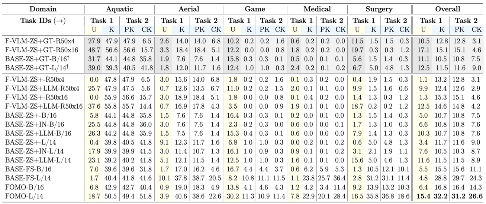

Results

(top) BASE-FS (bottom) FOMO on RWD. blue - unknown, green - known. FOMO shows superior performance on RWD, appearing to have less known-class confusion and better unknown object detection capability. For example, in Aquatic, BASE-FS seems to confuse unknown objects (stingrays) as known objects (sharks), but FOMO appears more robust.

Each domain is broken up into two tasks, where in task 1, you are given some classes, and then known and unknown mAP are evaluated. In Task 2, the rest of the classes are revealed, and we evaluate Previously and Currently known mAP. FOMO and BASE-FS are evaluated in 100-shot regime. To see the effect of the number of shots on performance. GT baselines use the ground-truth class names to identify unknown objects, effectively operating in the open-vocabulary paradigm, and serve as an upper bound to the text-conditioned (zero-shot) baselines.